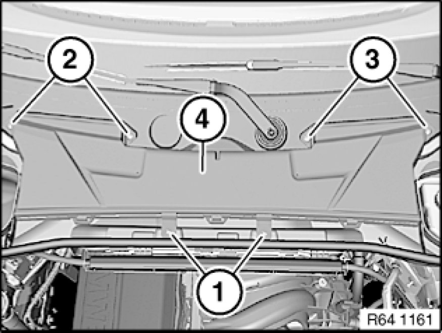
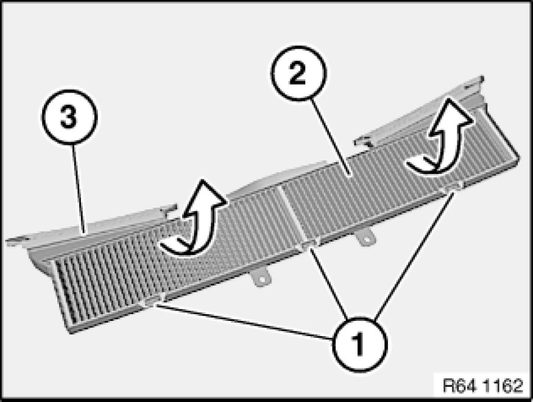

64 31 081 Removing and Installing/Replacing Microfilter Housing
64 31 081 - Removing and installing/replacing microfilter housing (upper section)

Release screws (1).
Unfasten screws (2 and 3).
Remove upper section of microfilter housing (4).
Installation:
Make sure upper section of microfilter housing (4) is correctly seated.

Replacement:
Release catches (1).
Release microfilter (2) in direction of arrow from upper section of housing (3).
Installation:
Make sure microfilter (2) is correctly seated.